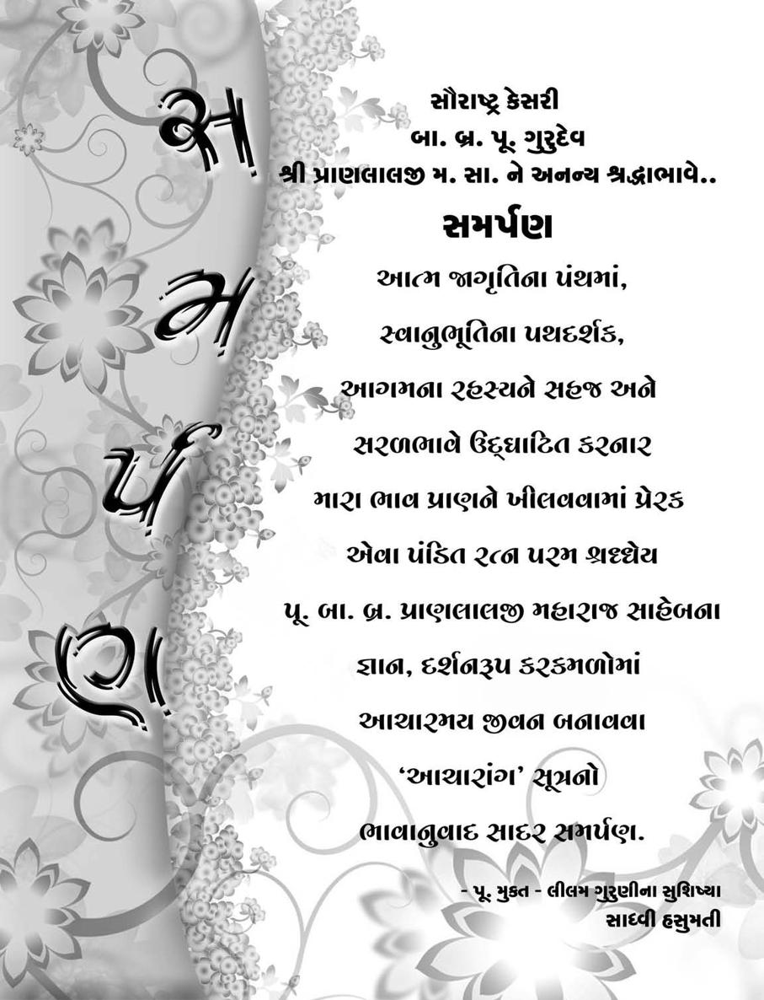
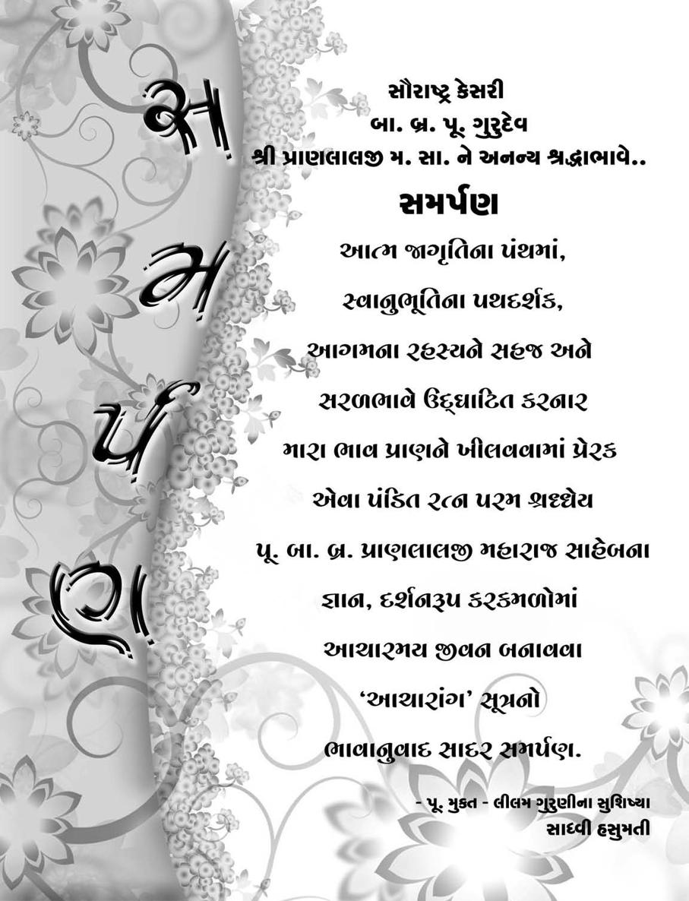
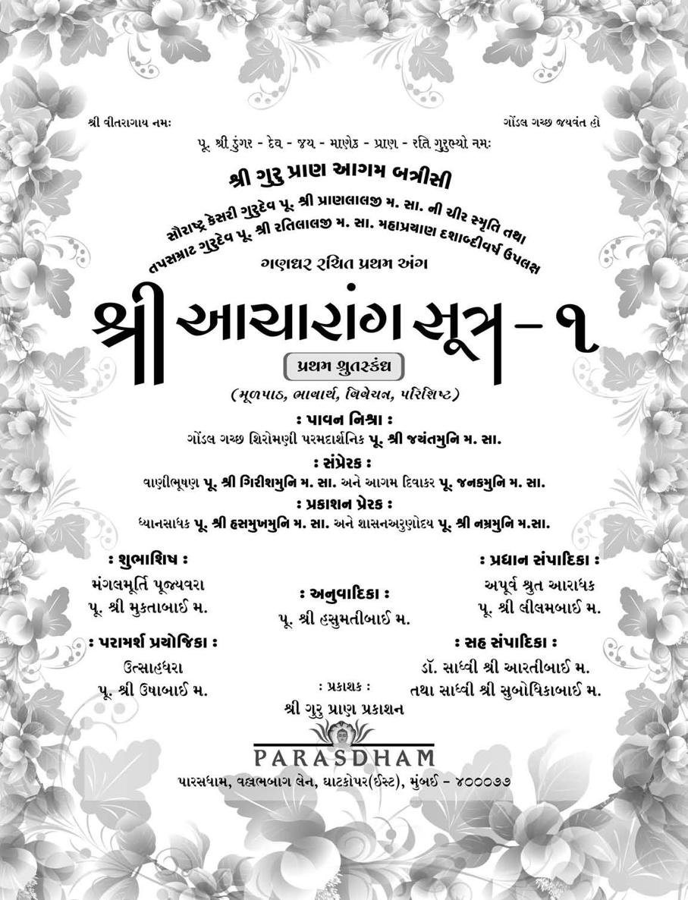
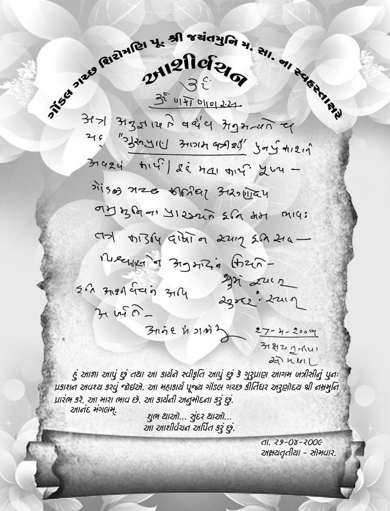
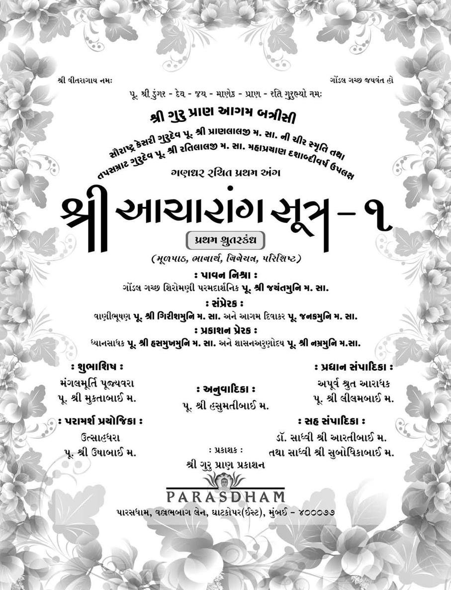
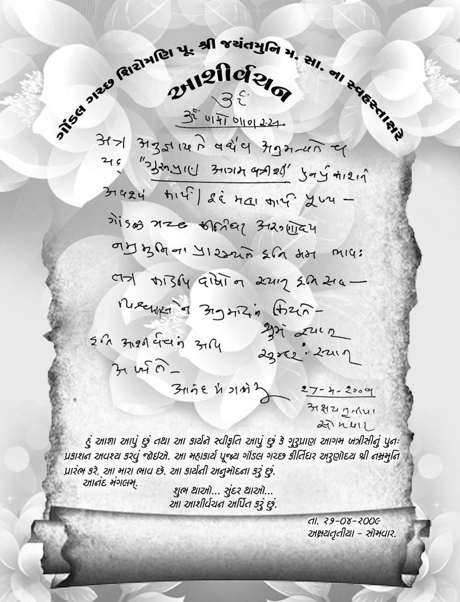

Top
Go To Index
Next
This book Unicode and EPUB Converted by Parth Shah (myself) free of charge as Gyaanseva. You can contact on caparthdshah@gmail.com for further details. You may quote reference "Jain Website"
For Original formats click on the following links as required to download the files.
આચારાંગ સૂત્ર ભાગ 2
આચારાંગ સૂત્ર ભાગ 2
ગુરુપ્રાણ આગમ બત્રીસી અનુવાદિકા મહાસતીજીઓ
શાસ્ત્ર સ્વાધ્યાય પ. સદ્વિવેક
આચાર્ય જીવન પરિચય
પ્રકાશકના બે બોલ
પ્રકાશકના બે બોલ(પહેલી આવૃત્તિ)
અભિગમ
સંપાદકિય
સંપાદન અનુભવ
1
3
સચિત્ત સંસક્ત આહાર ગ્રહણ વિવેક :–
4
વિવેચન :–
બીજ સહિત આહાર ગ્રહણ વિવેક :–
6
7
વિવેચન :–
8
વિવેચન :–
9
10
ઔદ્દેશિકાદિ દોષ રહિત આહારની એષણા :–
11
વિવેચન :–
અગ્ર પિંડાદિ ગ્રહણ નિષેધ :–
14
વિવેચન :–
15
ઉપસંહાર :–
વિવેચન :–
16
17
વિવેચન :–
ભિક્ષા યોગ્ય કુળ :–
વિવેચન :–
19
મહોત્સવોમાં આહારાદિની એષણા :–
વિવેચન :–
સંખડી ગમન નિષેધ :–
21
વિવેચન :–
ઉપસંહાર :–
23
24
25
26
વિવેચન :–
શંકાસ્પદ આહાર ગ્રહણનો નિષેધ :–
વિવેચન :–
ભંડોપકરણ સહિત ગમન :–
28
વિવેચન :–
29
રાજકુળમાં ભિક્ષા ગમનનો નિષેધ :–
વિવેચન :–
30
ઉપસંહાર :–
31
32
વિવેચન :–
ગાય દોહવાના સમયે ભિક્ષા માટે પ્રવેશ નિષેધ :–
33
વિવેચન :–
34
અતિથિ શ્રમણ સાથે વ્યવહાર વિવેક :–
35
વિવેચન :–
36
વિવેચન :–
37
વિષમ માર્ગમાં ગમન વિવેક :–
38
39
વિવેચન :–
બંધ દ્વાર ખોલવામાં વિવેક :–
વિવેચન :–
પૂર્વ પ્રવિષ્ટ શ્રમણ આદિની ઉપસ્થિતિમાં ભિક્ષા ગ્રહણની વિધિ :–
41
43
વિવેચન :–
ઉપસંહાર :–
45
વિવેચન :–
46
ગૃહસ્થના ઘરમાં પ્રવિષ્ટ સાધુનો વિવેક :–
47
વિવેચન :–
પૂર્વકર્મ દોષયુક્ત આહાર ગ્રહણ વિવેક :–
48
સચિત્ત સંસૃષ્ટ આહાર વિવેક :–
49
વિવેચન :–
50
51
વિવેચન :–
52
ઉપસંહાર :–
53
54
વિવેચન :–
55
ઉદ્ભિન્ન દોષયુક્ત આહાર ગ્રહણ નિષેધ :–
વિવેચન :–
56
છકાય જીવ પ્રતિષ્ઠિત આહારગ્રહણ વિવેક :–
57
વિવેચન :–
58
ધોવણ પાણીની ગવેષણા :–
59
વિવેચન :–
60
ઉપસંહાર :–
61
વિવેચન :–
62
સુંગધ માણવાનો નિષેધ :–
વિવેચન :–
શસ્ત્ર અપરિણત વનસ્પતિ આહાર ગ્રહણ નિષેધ :–
63
64
65
66
67
વિવેચન :–
68
69
ઉપસંહાર :–
70
71
72
વિવેચન :–
પરિભોગૈષણા વિવેક :–
74
વિવેચન :–
75
76
ગ્રહણૈષણા વિવેક :–
વિવેચન :–
77
ઉપસંહાર :–
78
79
વિવેચન :–
80
બહુઉજ્ઝિતધર્મા આહાર ગ્રહણનો નિષેધ :–
81
82
વિવેચન :–
83
અગ્રાહ્ય પદાર્થનો પરિભોગ–પરિષ્ઠાપન વિધિ :–
84
વિવેચન :–
ઉપસંહાર :–
85
પહેલું અધ્યયન : અગિયારમો ઉદ્દેશક
86
વિવેચન :–
87
સાત પિંડૈષણા :–
88
89
90
વિવેચન :–
91
સાત પાનૈષણા :–
92
વિવેચન :–
પડિમા સ્વીકારનો અહં ત્યાગ :–
વિવેચન :–
93
ઉદ્દેશકનો ઉપસંહાર :–
94
95
બીજું અધ્યયન : શય્યૈષણા
જીવ–જંતુ રહિત ઉપાશ્રયની ગવેષણા :–
વિવેચન :–
96
ઔદેશિક ઉપાશ્રય વિવેક :–
97
વિવેચન :–
98
પરિકર્મ દોષયુક્ત ઉપાશ્રય વિવેક :–
99
100
ઊંચા ઉપાશ્રયમાં વિવેક :–
101
વિવેચન :–
102
ગૃહસ્થાદિથી સંસક્ત ઉપાશ્રયનો વિવેક :–
103
104
105
106
ઉપસંહાર :–
107
બીજું અધ્યયન : બીજો ઉદ્દેશક
109
વિવેચન :–
ત્રસ–સ્થાવર જીવોથી સંસક્ત ઉપાશ્રય વિવેક :–
111
વિવેચન :–
અન્યતીર્થિકોના સ્થાનમાં નિવાસ વિવેક :–
વિવેચન :–
શય્યા સંબંધી નવ પ્રકારની ક્રિયા : (1) કાલાતિક્રાંત ક્રિયા :–
વિવેચન :–
(ર) ઉપસ્થાન ક્રિયા :–
113
વિવેચન :–
(3) અભિક્રાંત ક્રિયા :–
વિવેચન :–
(4) અનભિક્રાંત ક્રિયા :–
વિવેચન :–
(પ) વર્જ્યક્રિયા :–
વિવેચન :–
(6) મહાવર્જ્ય ક્રિયા :–
117
વિવેચન :–
(7) સાવદ્ય ક્રિયા :–
(8) મહાસાવદ્ય ક્રિયા :–
119
વિવેચન :–
(9) અલ્પ સાવદ્ય ક્રિયા :–
વિવેચન :–
ઉપસંહાર :–
121
બીજું અધ્યયન : ત્રીજો ઉદ્દેશક
122
વિવેચન :–
123
ઉપાશ્રયમાં યતના :–
124
વિવેચન :–
125
ઉપાશ્રયની યાચના વિધિ :–
વિવેચન :–
126
નિષિદ્ધ ઉપાશ્રય :–
127
128
વિવેચન :–
129
સંસ્તારક ગ્રહણ વિવેક :–
130
વિવેચન :–
સંસ્તારક એષણાની ચાર પ્રતિમા :–
131
132
વિવેચન :–
133
સંસ્તારકને પાછા આપવાનો વિવેક :–
વિવેચન :–
સ્થંડિલભૂમિ પ્રતિલેખના :–
134
વિવેચન :–
શયન વિધિ વિવેક :–
135
136
શય્યા સમભાવ :–
137
વિવેચન :–
ઉપસંહાર :–
138
139
ત્રીજું અધ્યયન : ઈર્યા
વર્ષાવાસ–વિહારચર્યા :–
140
141
વિવેચન :–
142
વિહાર ચર્યાનો વિવેક :–
143
144
145
વિવેચન :–
નૌકારોહણ વિધિ :–
146
147
148
149
વિવેચન :–
150
ઉપસંહાર :–
151
ત્રીજું અધ્યયન : બીજો ઉદ્દેશક
153
વિવેચન :–
154
ઈર્યા સમિતિ વિવેક :–
વિવેચન :–
જંઘાપ્રમાણ પાણીને પાર કરવાની વિધિ :–
155
વિવેચન :–
વિષમ માર્ગાદિમાં ગમન–નિષેધ :–
157
વિવેચન :–
159
ઉપસંહાર :–
161
વિવેચન :–
162
આચાર્યાદિની સાથે વિહારમાં વિનયવિધિ :–
163
વિવેચન :–
વિહારચર્યામાં ભાષાસંયમ :–
164
165
વિવેચન :–
વિહારમાં નિર્ભયતાની સાધના :–
166
167
વિવેચન :–
168
ઉપસંહાર :–
169
ચોથું અધ્યયન
ચોથું અધ્યયન : ભાષાજાત
ભાષાગત અનાચાર વિવેક :–
171
વિવેચન :–
સોળ પ્રકારના વચન :–
172
વિવેચન :–
ભાષાના ચાર પ્રકાર :–
174
વિવેચન :–
175
176
સંબોધન ભાષા વિવેક :–
177
વિવેચન :–
પ્રાકૃતિક તત્ત્વ સંબંધી ભાષા વિવેક :–
178
વિવેચન :–
179
ઉપસંહાર :–
180
181
વિવેચન :–
સાવદ્યકારી ભાષા વિવેક :–
વિવેચન :–
પંચેન્દ્રિય સંબંધી ભાષા વિવેક :–
183
વિવેચન :–
વનસ્પતિ સંબંધી ભાષા વિવેક :–
185
વિવેચન :–
187
શબ્દાદિ વિષયક ભાષા વિવેક :–
વિવેચન :–
ભાષા વિવેક :–
189
વિવેચન :–
ઉપસંહાર :–
191
પાંચમું અધ્યયન : વસ્ત્રૈષણા
ગ્રાહ્ય વસ્ત્રોના પ્રકાર તેમજ પરિમાણ :–
વિવેચન :–
192
વસ્ત્રગ્રહણ કરવાની ક્ષેત્ર મર્યાદા :–
વિવેચન :–
ઔદ્દેશિક આદિ દોષયુક્ત વસ્ત્રૈષણાનો નિષેધ :–
194
વિવેચન :–
બહુમૂલ્યવાન વસ્ત્રનો નિષેધ :–
195
196
વિવેચન :–
વસ્ત્રૈષણાની ચાર પ્રતિમાઓ :–
198
વિવેચન :–
199
અનૈષણીય વસ્ત્રગ્રહણનો નિષેધ :–
200
201
વિવેચન :–
202
વસ્ત્ર ગ્રહણ પૂર્વે પ્રતિલેખન :–
વિવેચન :–
203
ગ્રાહ્ય–અગ્રાહ્ય વસ્ત્ર વિવેક :–
વિવેચન :–
204
વસ્ત્ર પ્રક્ષાલન વિધિ :–
205
વિવેચન :–
વસ્ત્ર સૂકવવાની વિધિ :–
206
વિવેચન :–
207
208
વિવેચન :–
209
વસ્ત્રો સાથે વિહારાદિ :–
વિવેચન :–
પ્રાતિહારિક વસ્ત્રને પાછા આપવાની વિધિ :–
211
વિવેચન :–
વસ્ત્રમાં અનાસક્ત ભાવ :–
વિવેચન :–
213
ઉપસંહાર :–
215
છઠ્ઠું અધ્યયન : પાત્રૈષણા
પાત્રના પ્રકાર અને મર્યાદા :–
વિવેચન :–
216
દોષયુક્ત પાત્ર ગ્રહણ નિષેધ :–
217
વિવેચન :–
મૂલ્યવાન પાત્ર ગ્રહણ નિષેધ :–
218
વિવેચન :–
પાત્રૈષણાની ચાર પ્રતિમાઓ :–
219
વિવેચન :–
220
અનેષણીય પાત્ર ગ્રહણ નિષેધ :–
221
વિવેચન :–
પાત્ર ગ્રહણ પૂર્વે પ્રતિલેખન :–
222
વિવેચન :–
ઉપસંહાર :–
224
વિવેચન :–
225
સચિત્ત પાણી પરઠવાની વિધિ :–
વિવેચન :–
પાત્ર સહિત ગમન :–
227
ઉપસંહાર :–
229
સાતમું અધ્યયન : અવગ્રહ પડિમા
અવગ્રહ ગ્રહણની અનિવાર્યતા :–
વિવેચન :–
230
231
અવગ્રહ યાચના વિધિ :–
વિવેચન :–
સાંભોગિક સાધુઓ સાથે વ્યવહાર :–
232
વિવેચન :–
સમનોજ્ઞ સાધર્મિક સાધુઓ સાથે વ્યવહાર :–
234
વિવેચન :–
સાધુને માટે વર્જિત સ્થાન :–
236
237
વિવેચન :–
ઉપસંહાર :–
238
વિવેચન :–
239
આંબાવાડી આદિમાં સાધુનો વિવેક :–
241
વિવેચન :–
અવગ્રહ ગ્રહણની સાત પ્રતિમા :–
243
વિવેચન :–
245
અવગ્રહના પાંચ પ્રકાર :–
વિવેચન :–
247
આઠમું અધ્યયન
આઠમું અધ્યયન
જીવ–જંતુયુક્ત સ્થાન ગ્રહણનો નિષેધ :–
વિવેચન :–
249
ચાર સ્થાન પ્રતિમા :–
250
વિવેચન :–
ઉપસંહાર :–
।। આઠમું અધ્યયન સંપૂર્ણ ।।
252
253
નવમું અધ્યયન
નિષદ્યા ભૂમિની શુદ્ધિ :–
વિવેચન :–
254
સ્વાધ્યાય ભૂમિમાં સાવધાની :–
વિવેચન :–
।। નવમું અધ્યયન સંપૂર્ણ ।।
255
દસમું અધ્યયન
દસમું અધ્યયન
ઉચ્ચાર–પ્રસ્રવણ વિવેક :–
વિવેચન :–
જીવ હિંસક સ્થંડિલ ભૂમિનો વિવેક :–
257
258
વિવેચન :–
259
જનાકીર્ણ સ્થંડિલ ભૂમિ વિવેક :–
260
261
262
263
વિવેચન :–
264
ઉચ્ચાર પ્રસ્રવણ પરિષ્ઠાપન વિધિ :–
વિવેચન :–
265
ઉપસંહાર :–
।। દસમું અધ્યયન સંપૂર્ણ ।।
266
267
અગિયારમું અધ્યયન
વાઈજત્રોના શબ્દ શ્રવણમાં સંયમ :–
268
વિવેચન :–
269
વિવધ સ્થાનોમાં શ્રોતેન્દ્રિય સંયમ :–
270
વિવેચન :–
271
મનોરંજનના સ્થળોમાં શબ્દશ્રવણમાં સંયમ :–
272
273
વિવેચન :–
ઈહલૌકિક–પારલૌકિક શબ્દ સંયમ :–
274
વિવેચન :–
ઉપસંહાર :–
।। અગિયારમું અધ્યયન સંપૂર્ણ ।।
275
બારમું અધ્યયન
276
બારમું અધ્યયન
રૂપ દર્શનમાં સંયમ :–
વિવેચન :–
277
।। બારમું અધ્યયન સંપૂર્ણ ।।
278
279
તેરમું અધ્યયન
પરક્રિયા :–
વિવેચન :–
પાદ પરિકર્મ નિષેધ :–
280
281
વિવેચન :–
કાય પરિકર્મ નિષેધ :–
282
વિવેચન :–
વ્રણ પરિકર્મ નિષેધ :–
283
284
વિવેચન :–
ગાંઠ–હરસ–ભગંદરાદિ પરિકર્મ નિષેધ :–
285
અંગ પરિકર્મ નિષેધ :–
286
પરિચર્યારૂપ પરક્રિયા નિષેધ :–
287
વિવેચન :–
288
ઉપસંહાર :–
।। તેરમું અધ્યયન સંપૂર્ણ ।।
289
ચૌદમું અધ્યયન
ચૌદમું અધ્યયન
અન્યોન્ય ક્રિયા નિષેધ :–
વિવેચન :–
291
।। ચૌદમું અધ્યયન સંપૂર્ણ ।।
292
293
પંદરમું અધ્યયન
ભગવાન મહાવીર સ્વામીના પાંચ કલ્યાણક નક્ષત્ર :–
વિવેચન :–
295
ભગવાનનું ગર્ભાવતરણ :–
296
વિવેચન :–
ભગવાનનું ગર્ભસંહરણ :–
298
વિવેચન :–
299
ભગવાન મહાવીર સ્વામીનો જન્મ :–
300
વિવેચન :–
ભગવાનનું નામકરણ :–
301
302
વિવેચન :–
ભગવાનનો બાલ્યકાલ :–
ભગવાનની યુવાવસ્થા :–
303
ભગવાનના ત્રણ પ્રચલિત નામો :–
વિવેચન :–
ભગવાનના સ્વજનોના નામ :–
304
ભગવાનના માતાપિતાની ધર્મસાધના :–
305
વિવેચન :–
દીક્ષા ગ્રહણનો સંકલ્પ :–
306
વિવેચન :–
307
સાંવત્સરિક દાન તથા લોકાંતિક દેવોની વિજ્ઞપ્તિ :–
308
વિવેચન :–
309
ભગવાનનો અભિનિષ્ક્રમણ મહોત્સવ :–
310
312
313
314
315
316
317
વિવેચન :–
318
ભગવાનનો સાધનાકાલ :–
319
વિવેચન :–
320
ભગવાનને કેવળજ્ઞાનની પ્રાપ્તિ :–
322
વિવેચન :–
323
ભગવાનની ધર્મદેશના :–
વિવેચન :–
324
પ્રથમ મહાવ્રત અને તેની ભાવના :–
325
326
વિવેચન :–
327
328
બીજું મહાવ્રત અને તેની પાંચ ભાવના :–
329
330
વિવેચન :–
331
ત્રીજું મહાવ્રત અને તેની પાંચ ભાવના :–
332
333
વિવેચન :–
334
ચોથું મહાવ્રત અને તેની પાંચ ભાવના :–
335
336
વિવેચન :–
337
પાંચમું મહાવ્રત અને તેની પાંચ ભાવના :–
338
340
વિવેચન :–
341
ઉપસંહાર :–
342
વિવેચન :–
।। પંદરમું અધ્યયન સંપૂર્ણ ।।
સોળમું અધ્યયન
સોળમું અધ્યયન
અનિત્ય ભાવના :–
વિવેચન :–
345
સાધકની સહિષ્ણુતા :–
વિવેચન :–
346
સમભાવથી શુદ્ધિ :–
347
348
વિવેચન :–
349
બંધનથી મુક્ત :–
350
વિવેચન :–
351
352
પરિશિષ્ટ–1 :–
ઉપ્પન્નેઈવા, વિગમેઈવા, ધુવેઈવા
357
359
361
વિવેચિત વિષયોની અકારાદિ અનુક્રમણિકા પરિશિષ્ટ–3 :–
364
365
ગુરુપ્રાણ આગમ બત્રીસી અનુવાદિકા મહાસતીજીઓ
પ્રધાન સંપાદિકા ભાવયોગિની બા. બ્ર. પૂ. શ્રી લીલમબાઈ મ.
સહસંપાદિકા સાધ્વી શ્રી આરતીબાઈ મ. તથા સાધ્વી શ્રી સુબોધિકાબાઈ મ.
સાંનિધ્ય : પૂ. શ્રી જયંતમુનિ મ. સા. પૂ. શ્રી ગિરીશચન્દ્રજી મ. સા.
જ્ઞાનદાનના સંપૂર્ણ સહયોગી : પૂ. શ્રી ત્રિલોકમુનિ મ. સા.
સૂત્રનું નામ
અનુવાદિકા
શ્રી આચારાંગ સૂત્ર(માગ ૧-૨)
હસુમતીબાઈ મ., પૂ. પુષ્પાબાઈ મ.
શ્રી સૂયગડાંગ સૂત્ર (ભાગ ૧-૨)
પ્ ઉર્મીલાબાઈ મ.
શ્રી ઠાણાંગ સૂત્ર (ભાગ ૧-૨)
વીરમતીબાઈ મ.
શ્રી સમવાયાંગ સૂત્ર
વનીતાબાઈ મ.
શ્રી ભગવતી સૂત્ર(૧ થી પ ભાગ)
ડોં. આરતીબાઈ મ.
શ્રી જ્ઞાતા સૂત્ર
સુમનબાઈ મ.
 Link to EPUB File of this Book
Link to EPUB File of this Book Link to Original PDF File of this Book
Link to Original PDF File of this Book 
 
